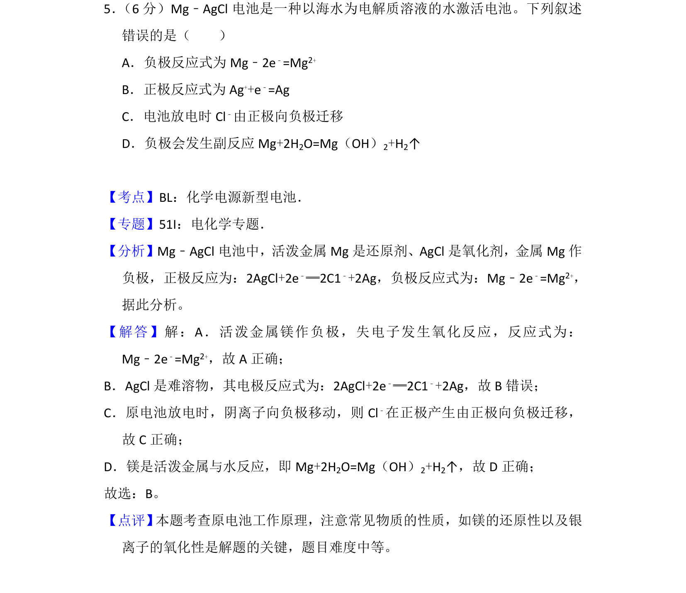
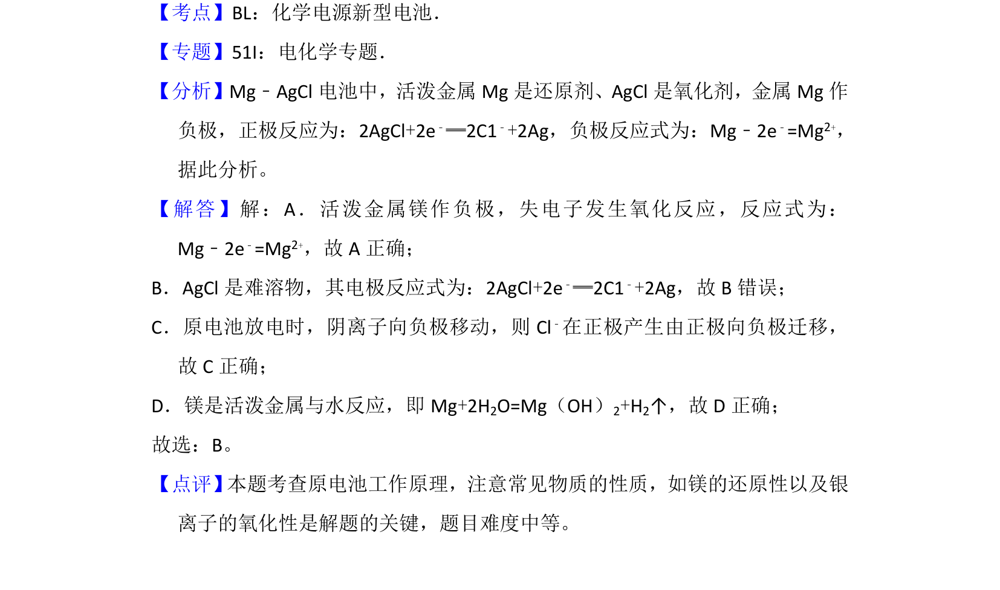

考点：原电池工作原理 电极反应式 阴离子迁移 金属腐蚀

该题考查 Mg-AgCl 海水电池的原电池原理，涉及电极反应式书写、离子迁移方向判断及副反应分析。

📄 原 PDF 第 4 页：
素材/真题/吉林/2008-2024·（吉林）化学高考真题/2016年高考化学试卷（新课标Ⅱ）（解析卷）.pdf
5． （6分）Mg﹣AgCl电池是一种以海水为电解质溶液的水激活电池。下列叙述 错误的是（ ） A．负极反应式为Mg﹣2e ﹣=Mg2+ B．正极反应式为Ag ++e﹣=Ag C．电池放电时Cl ﹣由正极向负极迁移 D．负极会发生副反应Mg+2H 2O=Mg（OH）2+H2↑
【考点】BL：化学电源新型电池．菁优网版权所有 【专题】51I：电化学专题． 【分析】Mg﹣AgCl电池中，活泼金属Mg是还原剂、AgCl是氧化剂，金属Mg作 负极，正极反应为：2AgCl+2e﹣═2C1﹣+2Ag，负极反应式为：Mg﹣2e﹣=Mg2+， 据此分析。 【解答】解：A．活泼金属镁作负极，失电子发生氧化反应，反应式为： Mg﹣2e﹣=Mg2+，故A正确； B．AgCl是难溶物，其电极反应式为：2AgCl+2e ﹣═2C1﹣+2Ag，故B错误； C．原电池放电时，阴离子向负极移动，则Cl ﹣在正极产生由正极向负极迁移， 故C正确； D．镁是活泼金属与水反应，即Mg+2H 2O=Mg（OH）2+H2↑，故D正确； 故选：B。 【点评】 本题考查原电池工作原理，注意常见物质的性质，如镁的还原性以及银 离子的氧化性是解题的关键，题目难度中等。